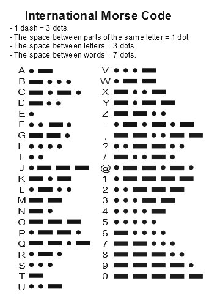

The History of Morse Code
Morse code was invented by Samuel F. B. Morse in the 1830s. He began work on the electric telegraph in 1832, developed a practical system in 1844, and patented his technology in 1849. The code that Morse developed for use with his system went through a few transformations before arriving at the code we’re familiar with today. Initially, Morse code only transmitted numbers. The transmission’s receiver would then have to use a dictionary to translate the numbers into words. But that proved to be tedious. Soon the code was expanded to include letters and even punctuation. In 1844, Morse appeared before Congress to show off his little machine. The first public message was transmitted on May 24, 1844. It was “What God hath wrought.” The original telegraph system had an apparatus on the receiving end that spat out a string of paper with indentations on it. Short indentations were called “dots” and the longer ones “dashes.” As telegraph users became more proficient with the code, they soon dispensed with the paper tape and deciphered code by year. Self made tycoon Andrew Carnegie worked as a telegraph operator as a boy. He set himself apart by learning to decipher Morse code by ear. Ten years after the first telegraph line opened in 1844, over 23,000 miles of line crossed the country. The telegraph and Morse code had a profound effect on the development of the American West. Railroad companies used it to communicate between their stations and telegraph companies began to pop up everywhere, shortening the amount of time needed to communicate across the country. During this period, European countries had developed their own system of Morse code. The code used in America was called American Morse code or often Railroad Morse code. The code used in Europe was called Continental Morse code. In the 1890’s radio communication was invented and Morse code was used for transmitting messages at sea. As radio frequencies got longer and longer, international communication soon became possible and a need for an international standard code developed. In 1912, the International Morse code was adopted for all international communication. However, many railroads and telegraph companies continued using Railroad Morse code because it could be sent faster. Today, American Morse code is nearly extinct. A few amateur radio users and Civil War re-enactors still keep it alive. Morse code became extremely important in maritime shipping and aviation. Pilots were required to know how to communicate using Morse code up until the 1990s. Today Morse code is primarily used among amateur radio users. In fact, up until 2007, if you wanted to get your amateur radio license in America, you had to pass a Morse code proficiency test.
How to Learn Morse Code
Learning Morse code is like learning any language. You have to practice, practice, practice. We’ve brought together some resources to help you get started on the path to becoming a master telegraph operator. Who knows? Maybe you can start your own telegraph shop.
1. Get familiar with the code.
The first thing you’ll need to do is get familiar with what the alphabet looks like in Morse code. Below I’ve included the International Morse code alphabet. Print it off, carry it around with you, and study it during your free time. (In order to download the image, right click it and hit “save.”)
2. Start listening to Morse code.
You’re going to have to actually listen to Morse code if you ever want to learn it. Head over to learnmorsecode.com and download some MP3s of some code. Listen to it and see if you can decipher any letters. You can also use apps to learm it.
Tips to Make Morse Code Memorization Easier
Knowing the number of characters in each letter can help you narrow down your possibilities when you receive a message.
T, E= 1 character each
A, I, M,N= 2 characters
D, G, K, O, R, S, U, W= 3 characters
B, C, F, H, J, L, P, Q, V, X, Y, Z= 4 characters each
Reverse letters. Some letters are the reverse of each other in Morse code. For example “a” is “._” while “n” is “_.”
Here are the rest of the letters that are the reverse of each other:
a & n d & u g & w b & v f & l q & y